森林素材目录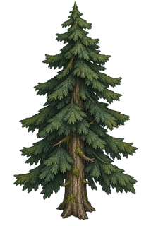
松树树木植被
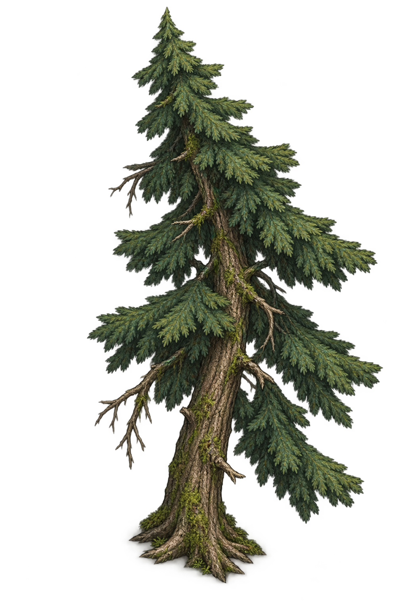
弯曲松树树木植被
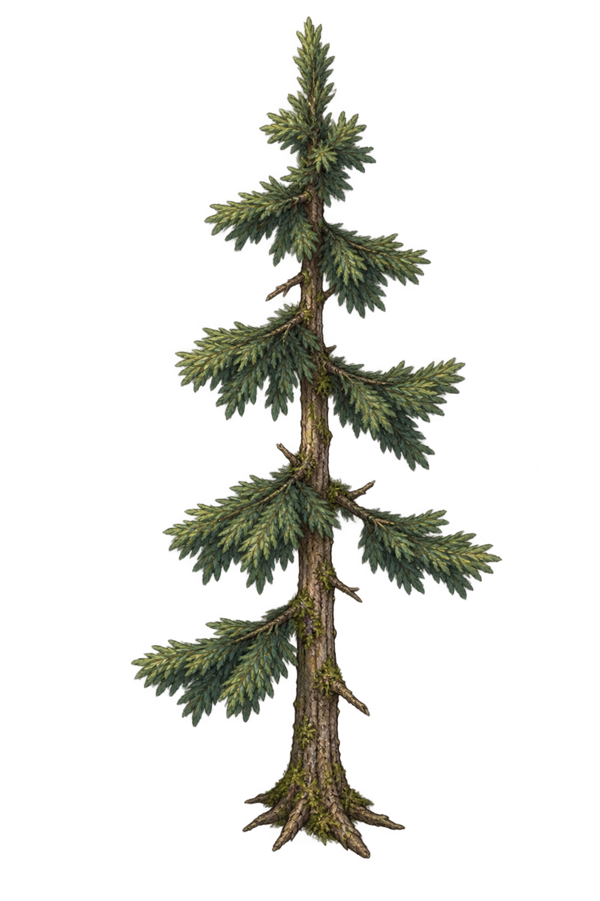
幼松树木植被
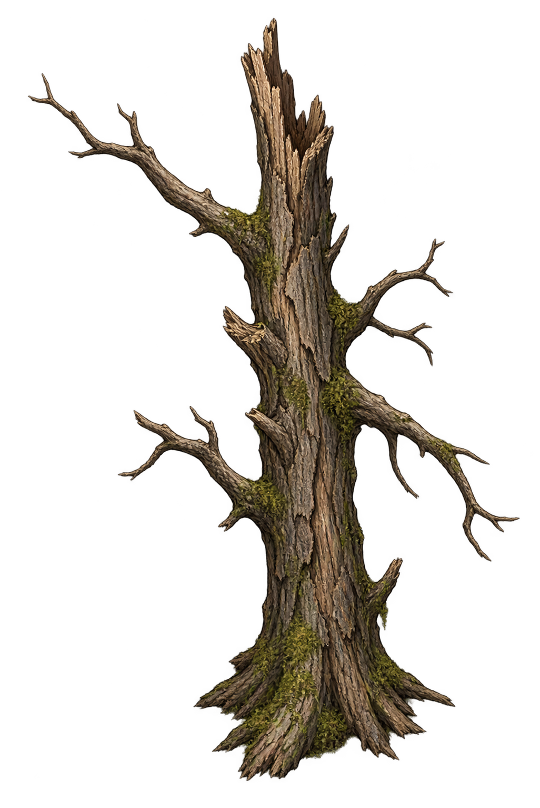
枯树树木植被
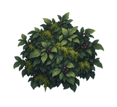
灌木树木植被
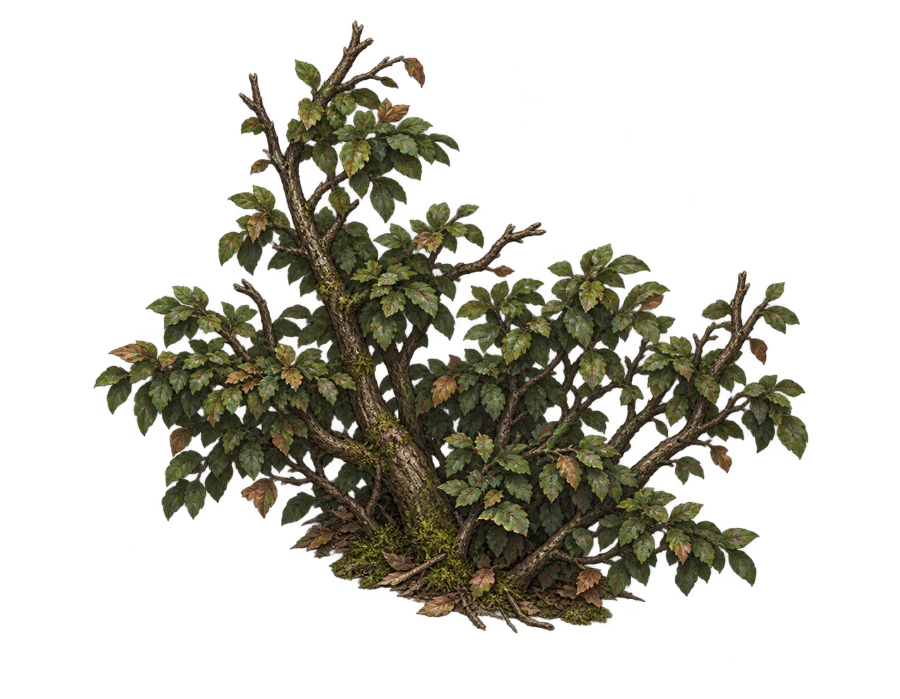
稀疏灌木树木植被
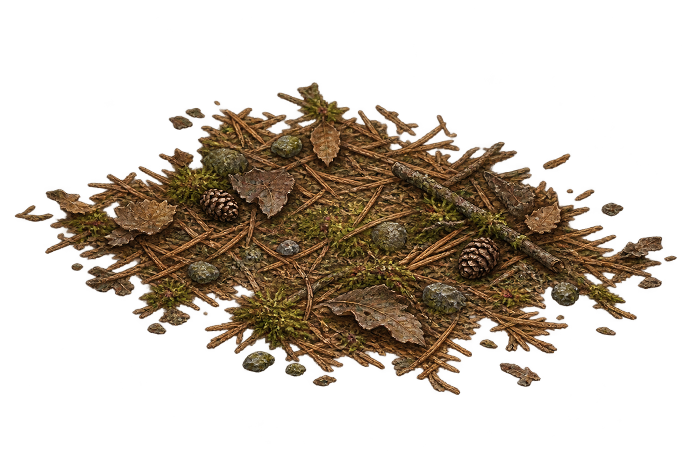
落叶松针地表枯木
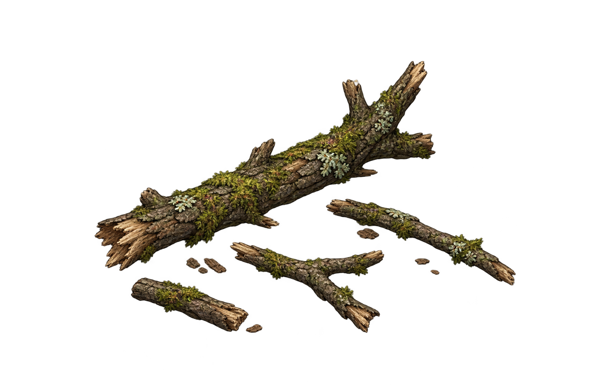
断枝地表枯木
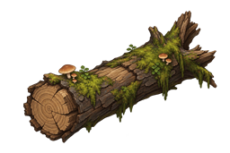
倒木地表枯木
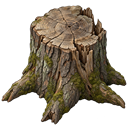
树桩地表枯木
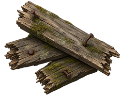
破木板地表枯木
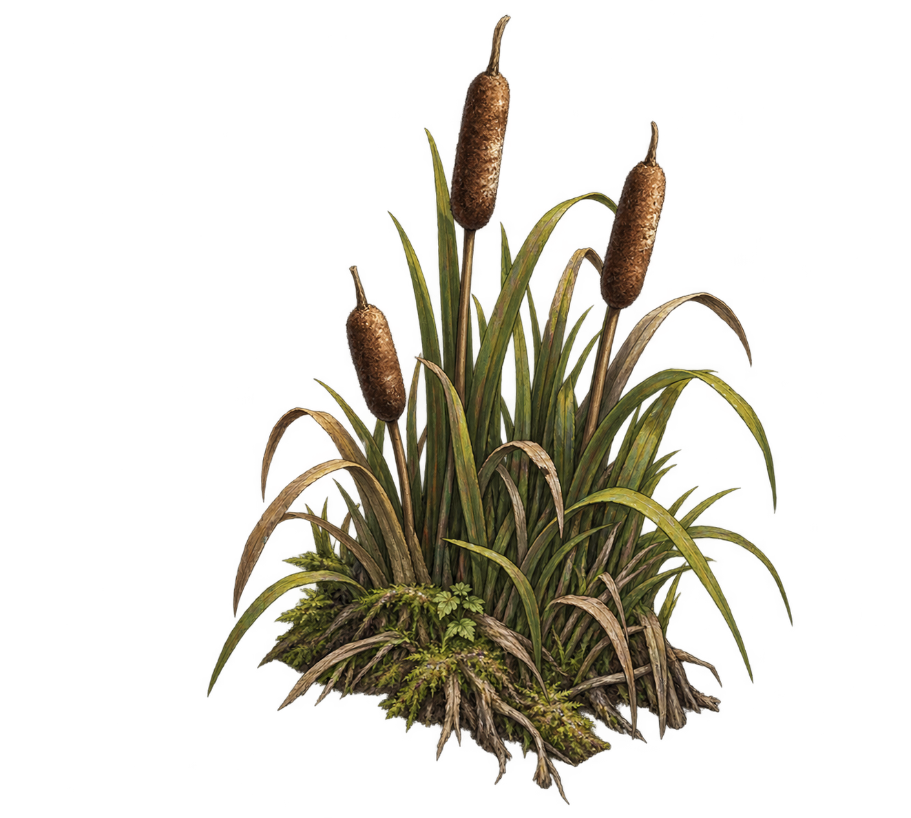
芦苇水岸岩石
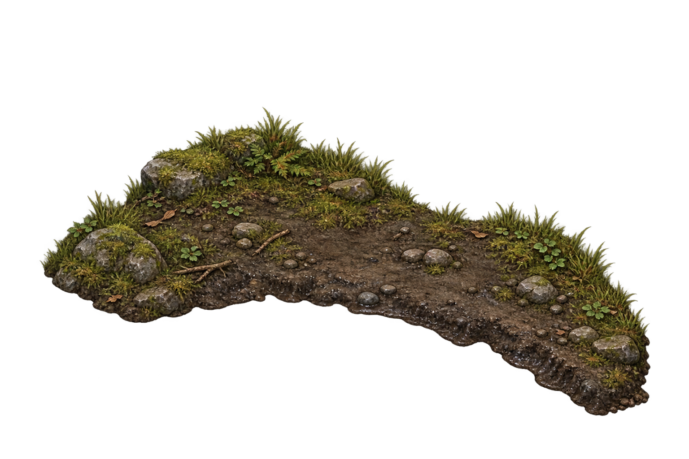
泥岸水岸岩石
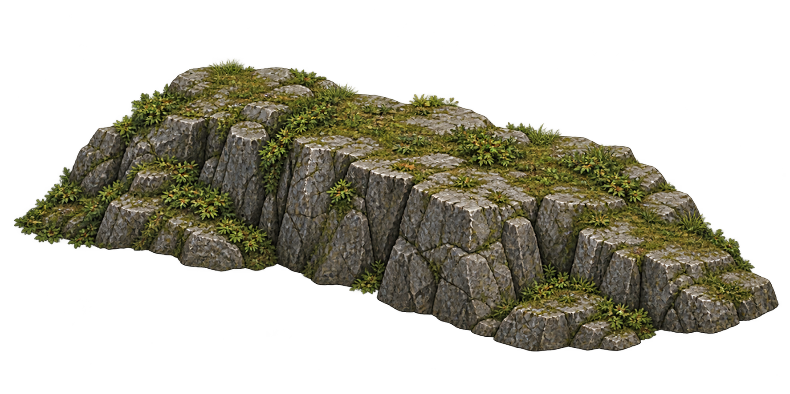
岩壁水岸岩石
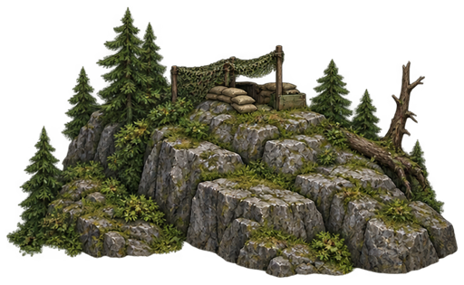
岩石瞭望点水岸岩石
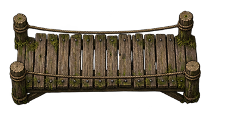
木桥水岸岩石
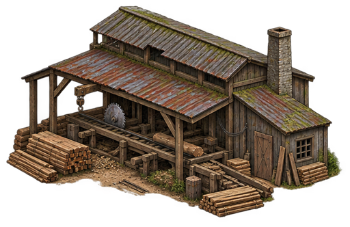
伐木场建筑据点
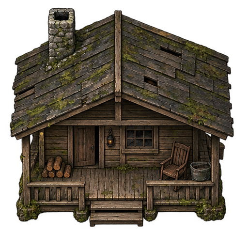
木屋建筑据点
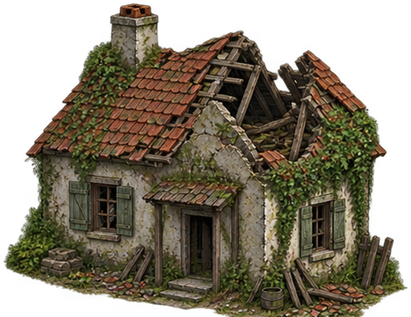
废弃住宅建筑据点
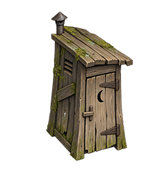
旱厕建筑据点
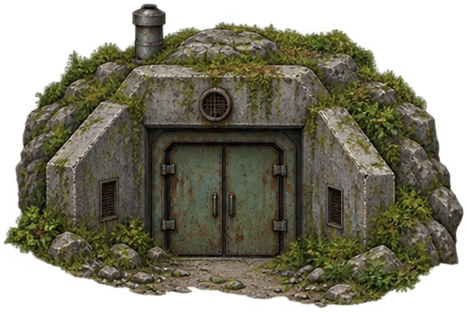
地堡入口建筑据点
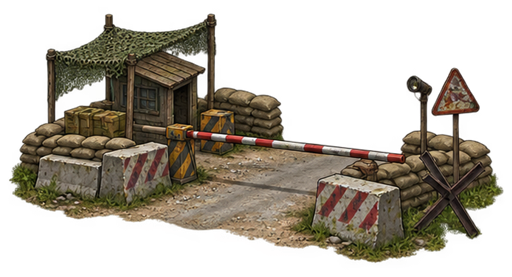
军事检查站建筑据点
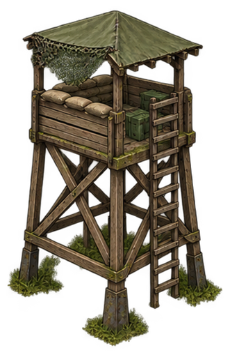
瞭望塔建筑据点
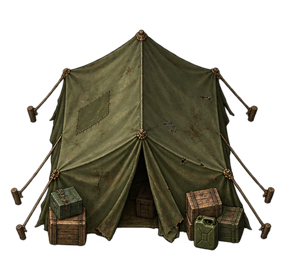
军用帐篷建筑据点
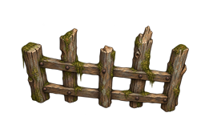
木围栏设施杂物
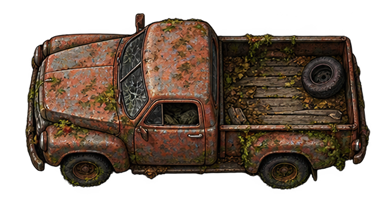
旧皮卡设施杂物
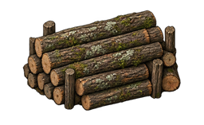
原木堆设施杂物
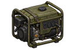
发电机设施杂物
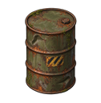
油桶设施杂物
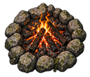
篝火设施杂物
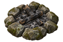
熄灭篝火设施杂物
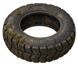
废轮胎设施杂物
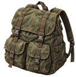
背包设施杂物
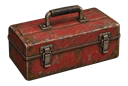
工具箱设施杂物
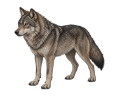
狼动物试样
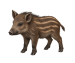
幼野猪动物试样